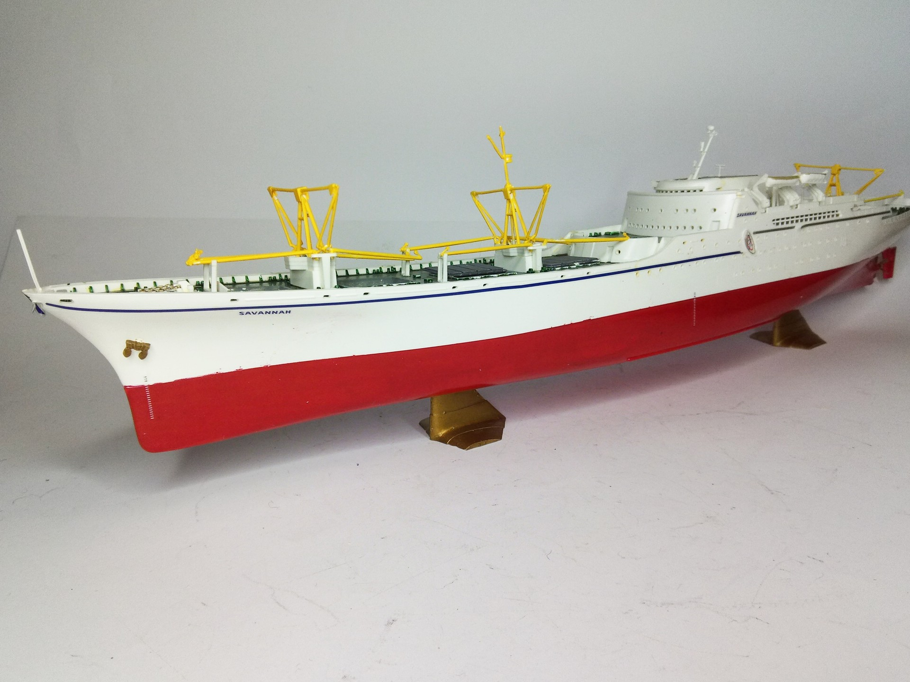
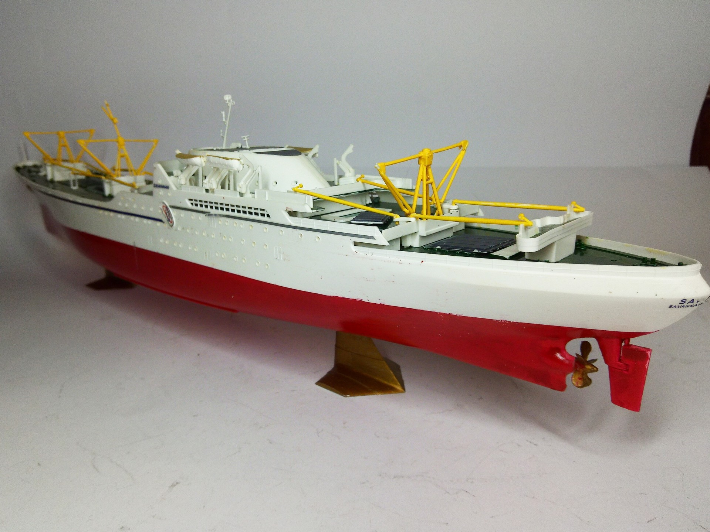

Navi · scale model archive
NS Savannah
NS Savannah — Kit: Revell, Scale: 1/380. First nuclear-powered merchant ship launched on July 21, 1959 #1/380 #Revell #Savannah

Photo gallery

English description
First nuclear-powered merchant ship launched on July 21, 1959
#1/380 #Revell #Savannah
Descrizione italiana
Prima nave mercantile a propulsione nucleare, varata il 21 luglio 1959.